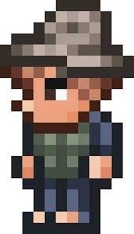

-El pescador
El Pescador (Angler en inglés, también llamado Rape) es un NPC. Para encontrarlo debes ir a la playa y despertarlo, te dará misiones en las cuales te pedirá un pez especial distinto diariamente y a cambio te recompensará si se lo entregas.
: Se defiende de los monstruos cercanos lanzando pez daga de escarcha que hace 10/15/17 . El daño y sus estadísticas generales aumentan a medida que avanza el juego
El pescador |
 |
Estadisticas |
Tipo |
NPC |
Salud |
250 |
Arma |
Pez daga de escarcha |
Defensa |
15 |
Especialidad |
Mandarte a pescar un pez por día para recompensas |
Bestiario |
Descripcion |
El pescador, un genio de la pesca, envía a otros a encontrar peces extraños para él. Los recompensa con objetos aleatorios y le divierten las desgracias que puedan sufrir.
|
Bioma preferido |
El oceano |
IDs internas |
ID de bestiario |
376 |
ID de NPC |
5 |
Frases
Interacción
- Al despertarlo
- "Supongo que debo darte las gracias por salvarme… o lo que fuera eso. ¡Serías un gran súbdito ayudante!"
- "¿Qué? ¿Quién rayos eres tú? ¡No, no me estaba ahogando ni nada por el estilo!"
- "¡Me has salvado! Podría usarte… digooo, contratarte para que realices un par de tareas para mí."


 En cualquier momento
En cualquier momento
- "¡¿Sabías que ya tengo <número de misiones completadas> peces increíblemente maravillosos?! ¡Es todo gracias a ti, que eres un mono mayordomo bastante útil!"
- "¡Vaaaya! ¡Me has incordiado como <número de misiones completadas> veces! ¡Si no consiguiese un pez muy guay de cada vez, tendría un cabreo que flipas!"
- Cuando hay una misión disponible
- "¡Psst! Puede que tenga un trabajillo para ti. ¡Tampoco es que puedas decir que no!"
- "¡Quiero un pez y me vas a encontrar uno! ¡Pregúntame por él!"
- "¡Oye! Solo me vale el sacrifi… Digooo… El maestro de la pesca al que estoy buscando."
- "<Nombre del pescador> quiere que seas el chico de los recados oficial de <nombre del mundo>."
- Al completar una misión
- "¡Oh! ¡Gracias por traerme el pez que te pedí! Y ahora, ¡lárgate!"
- "¡Una gran pieza! ¡Todo va según el plan! ¡Je, je, je!"
- "¡Eres un gran mono de los recados! Pero ahora, ¡lárgate!"
- "¡Ja, ja, ja, ja, ja, ja! ¡Lo has logrado! Pero sigues de una pieza. ¡Qué aburrido!"
- "¡Vaya! ¡Pero si has hecho lo que te pedí y has sobrevivido! ¡Genial! ¡Dámelo y lárgate!"
- Al intentar iniciar otra misión el mismo día
- "¡Ya tengo suficientes peces! ¡No necesito tu ayuda ahora mismo!"
- "Ya me has entretenido bastante por hoy. Márchate."
- "No tengo nada para ti en estos momentos."
- "Solo un pez al día. ¡Márchate!"
- "Todavía no he usado el último pez que me has traído. No necesito más."
- "¡Se acabó! El gran <nombre del pescador> te permite irte."
- Después de completar una misión
- "¡Estoy cabreado! Podría haber peces que se extinguieron incluso antes de que yo hubiese nacido."
- "¡¿Quééé?! ¿Acaso no ves que estoy recogiendo el sedal?"
- "No hay cocineros en <nombre del mundo>, así que me toca cocinarme el pescado yo solito. "
- "No tengo ni madre ni padre, ¡pero tengo un montón de peces! ¡A mí me vale!"
- "Deja que te dé un consejo: ¡nunca toques un bloque de hielo con la lengua! No, espera, olvida eso. ¡Estoy deseando verte hacerlo!"
- "¡¿Has visto alguna vez a un pez que ladra?! Yo no, ¡pero me preguntaba si tú sí lo habías visto!"
- "¡Oye! ¡Ten cuidado! ¡Estoy preparando las trampas para mi mayor broma hasta la fecha! ¡Nadie se lo verá venir! ¡No se lo digas a nadie!"
- "¡<Nombre del mundo>tiene un montón de peces de todo tipo!"
- Cuando la dríada está presente y después de terminar una misión
- "Je, je. ¡Tendrías que haber visto la cara de <nombre de la dríada> cuando clavé ese diente de piraña en la silla!"
- Cuando el tabernero está presente y después de terminar una misión
- "¿Por qué <nombre del tabernero> no me quiere vender cerveza? ¡Quiero probarla! ¡Menudo gruñón!"
- Durante una fiesta
- "¿Cómo? ¿Crees que me gustan las fiestas porque soy infantil? Pues efectivamente, ¡así que a festejar!"
- Durante una Luna de Sangre cuando hay una misión disponible
- "Tengo algo que pedirte. ¡Me da igual que haya un apocalipsis zombi en estos momentos!"
- "¡Venga, escucha! ¡Necesito que me consigas algo cuanto antes!"
- "¡No sé si sabes que cosas superterroríficas acechan en el agua durante una Luna de Sangre! ¡Deberías ir a echar un vistazo! ¡Yo lo veré todo desde aquí!"
- Durante una Luna de Sangre cuando no hay misión disponible
- "¡El peor momento para pescar es con una Luna de Sangre! Sí, los peces pican igual, ¡pero mientras los zombis te muerden!"
- "¡Hay un gritón de monstruos correteando por ahí fuera ahora mismo!"
- "¡Odio las Lunas de Sangre! ¡Me paso la noche en vela por culpa de todos esos sonidos terroríficos!"
- "Deberías probar a pescar cuando el agua esté toda sangrienta. ¡Es para morirse!"
- Cuando está lloviendo
- "¡Yo siempre salgo a pescar cuando llueve! ¡Por eso uso llevo este sombrero!"
- "¡Sí! ¡Está lloviendo! ¡Ahora podré ver cómo te empapas mientras pescas para mí!"
- Durante una tormenta
- "¡Hubo una vez, en el campamento de pesca, que un rayo cayó en el lago! ¡De repente, todos los peces flotaron hacia la superficie sin más!"
- "¡Nada mejor que una buena tormenta para salir a pescar! Aunque es peligroso de narices. ¡Por eso te mando a ti a hacerlo!"
- Durante un día ventoso
- "Está muy bien eso de pescar con viento, ¡pero esto es demasiado! ¡Casi me arranco un ojo con el anzuelo!"
- "¡¿Esto qué es, una especie de huracán?! ¡Casi me golpea un delfín!"
- Al estar en un cementerio
- "¡Tengo un miedo que flipas! ¡Y es todo por tu culpa!"
- "¡¿Cómo pretendes que pesque ahí fuera?! ¡¿Se te ha ido la olla o es que eres idiota?!"
Felicidad
- Cuando no tiene casa
- "Soy un crío, ¡tienes que darme una casa! ¡¿O es que eres idiota?!"
- Cuando está lejos de su casa
- "Me dejé la caña de pescar en casa. ¡Y está taaaaaaaan lejos...! ¡Mecachis!"
- Cuando vive en un lugar alejado
- "¡Sí! ¡Por fin puedo estar a solas con mis peces!"
- Cuando hay muchos NPCs viviendo cerca
- "No me gusta tener a toda esta gente asustándome a los peces. ¡Haz que se larguen!"
- "Detesto a todos esos foráneos. ¡Les han dado un susto de muerte a mis peces!"
- Cuando vive en el océano
- "¿Que por qué me encanta ir al océano? ¡Porque tiene un montón de peces molones!"
- Cuando vive en el desierto
- "¿Te has golpeado la cabeza o qué? ¡No hay peces en el desierto!"
- Al vivir en la mazmorra/corrupción/carmesí
- "Eh, ¡que los peces de la mazmorra/corrupción/carmesí intentan matarme!"
- Al vivir cerca de la princesa
- "<Nombre de la princesa> no es un pez, ¡pero aun así la soporto! ¡Es genial!"
- Al vivir cerca del demoledor / chica fiestera / recaudador de impuestos
- "<Nombre del demoledor / chica fiestera / recaudador> sabe lo que se hace, ¡a diferencia de otra gente! ¡Y eso me gusta, la verdad!"
- Al vivir cerca del tabernero
- "¡Odio a <nombre del tabernero> y a todo aquel que me trate como a un crío!"
- Cuando el valor de felicidad es neutral
- "Estoy bien. ¡Venga, tráeme un pez!"
Misiones
- La misión del día se determina a las 4:30 AM, no importa el momento en el que se hable con el pescador.
- Para poder pescar un pez de misión primero se debe hablar con el pescador.
- El pez de misión únicamente se puede pescar cuando la misión tiene efecto (es decir, entre las 4:30 AM de un día y el siguiente).
- El pez de misión se puede pescar solo si no se encuentra en el inventario.
- Es posible guardar el pez en un cofre para pescar múltiples copias.
- Es posible hablar con el pescador y entregar el pez de misión directamente sin haberlo pescado (por tener múltiples copias o al multiplicarlo con el modo viaje).
Recompensas
Para completar la misión es necesario tener el pez de misión en el inventario y volver a hacer clic en el botón de misión. El pez de misión será reemplazado por las recompensas. El pescador le dará al personaje un objeto, monedas y, a veces, cebos. Hay varias mecánicas que afectan a las recompensas:
- La probabilidad de obtener objetos que no son pociones aumenta con el número de misiones.
- Al completar 50 misiones, la probabilidad de recibir un objeto utilizable es 2 veces su probabilidad base.
- Al completar 100 misiones, la probabilidad se multiplica por 4.
- Al completar 150 misione, la probabilidad se multiplica por 6.67. Es el valor más alto posible.
- La cantidad de monedas aumenta con la cantidad de misiones completada y siempre se redondea hacia abajo teniendo como base 1
 (o
(o  , si la recompensa no es suficiente), hasta un máximo de 10 . La recompensa base es de aproximadamente 70 y aumenta en 1 50
, si la recompensa no es suficiente), hasta un máximo de 10 . La recompensa base es de aproximadamente 70 y aumenta en 1 50  por cada misión completada (antes de redondear). En modo experto estos valores se duplican.
por cada misión completada (antes de redondear). En modo experto estos valores se duplican.
- De vez en cuando se pueden obtener cebos. La probabilidad comienza en aproximadamente un 50% y aumenta con cada misión hasta llegar al 100% al completar la misión 50. La cantidad y la calidad de los cebos aumenta a medida que se completen misiones, hasta un máximo de 7 de cebo de maestro.
Utilizables
| Objeto |
Obtención |
| Zanahoria borrosa |
Garantizado en la misión 5 |
| Sombrero de pescador |
Garantizado en la misión 10 |
| Chaleco de pescador |
Garantizado en la misión 15 |
| Pantalones de pescador |
Garantizado en la misión 20 |
| Caña dorada |
Garantizado en la misión 30 / 50
0.4% de probabilidad después de la misión 75 |
| Cazamariposas dorado |
1.3% de probabilidad |
| Anzuelo |
1.7% de probabilidad |
| Vagoneta carpa |
1.67% de probabilidad |
| Sedal de gran prueba |
2.5% de probabilidad |
| Pendiente abisal |
2.5% de probabilidad |
| Caja de aparejos |
2.5% de probabilidad |
| Guía de bolsillo del pescador |
2.5% de probabilidad |
| Sextante |
2.5% de probabilidad |
| Radio del clima |
2.5% de probabilidad |
| Poción de sonar (2-5) |
20% de probabilidad |
| Poción de caja (2-5) |
20% de probabilidad |
| Poción de pesca (2-5) |
20% de probabilidad |
| Cebo de aprendiz (1-7) |
38% de probabilidad |
| Cebo de viajero (1-7) |
10% de probabilidad |
| Cebo de maestro (1-7) |
3% de probabilidad |
| Cubo de agua sin fondo |
1.4% de probabilidad en Modo difícil
Disponible después de la misión 10 |
| Esponja superabsorbente |
1.4% de probabilidad en Modo difícil
Disponible después de la misión 10 |
| Alas de aleta |
1.4% de probabilidad en Modo difícil
Disponible después de la misión 10 |
| Anzuelo directo |
1.4% de probabilidad en Modo difícil
Disponible después de la misión 10 |
Decorativos
| Objeto |
Obtención |
| Disfraz de sirena |
2% de probabilidad
Se reciben todas las piezas juntas. |
| Disfraz de pez |
2% de probabilidad
Se reciben todas las piezas juntas. |
| Bloque de piedra de coral (50-100) |
1% de probabilidad |
| Trofeo de pez conejo |
1% de probabilidad |
| Trofeo de dientes de tiburón |
1% de probabilidad |
| Trofeo dorado |
1% de probabilidad |
| Trofeo de pez espada |
1% de probabilidad |
| Rosa compás |
1% de probabilidad |
| Mapa del tesoro |
1% de probabilidad |
| Píxeles saqueadores |
1% de probabilidad |
| Preservador de vida |
1% de probabilidad |
| Plantador de algas |
1% de probabilidad |
| Barco embotellado |
1% de probabilidad |
| Timón de barco |
1% de probabilidad |
| Ancla de pared |
1% de probabilidad |
Notas
- El número de misiones completada está asociado al personaje y no al mundo.
- El número de misiones completadas necesarias para obtener el logro tiene en cuenta a todos los personajes.
- La misión actual está conectada con el nombre del personaje. Si por alguna razón hay dos personajes con el mismo nombre en el mismo mundo, uno de ellos no podrá reclamar las recompensas.
- El pescador dormido puede flotar en agua y en miel.
Curiosidades
- Es uno de los 2 NPC's (Guía y Pescador) que no requieren requisito alguno para aparecer.
- Es el único NPC que no muere sino al "morir" aparece un mensaje "¡(Nombre) ha desaparecido!" y se esfuma y eso es para no añadir maltrato infantil a Terraria.
- El pescador es el más pequeño de los NPC debido a que es un niño.
- El personaje esta basado en Tom Sawyer por las bromas que este realiza y porque quiere que el resto de la gente trabaje por él.
- Las misiones tienen rareza ámbar.
volver al inicio
volver a la pagina NPC
.